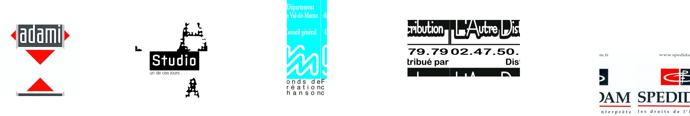
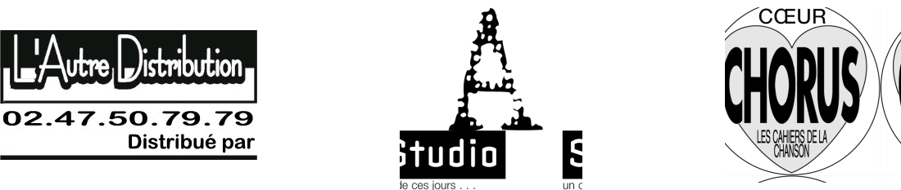

Contact
N° de téléphone: 06 07 05 97 54
Email: lairderien92@gmail.com
@mentions légales


Retrouver les chansons via les liens suivants: https://open.spotify.com/artist/6R0MBnTeqdLrIOyqK0iClh https://music.apple.com/us/artist/gildas-thomas/202691779 https://www.deezer.com/fr/artist/56763 Les textes des chansons Les photos de l'album Réalisation: Thierry Anmuth Arrangements: Thierry Anmuth et Benoît Simon Guitare: Benoît Simon Batterie: Norbert Lucarain Basse: Pierre Dubost Clavier: Thierry Anmuth Photos: Didier Pallagès
Rerouver les chansons sur deezer et youtube via les liens suivants: https://open.spotify.com/artist/6R0MBnTeqdLrIOyqK0iClh https://music.apple.com/us/artist/gildas-thomas/202691779 https://www.deezer.com/fr/artist/56763 https://www.youtube.com/watch?v=AfDDVxaQdxo&t=77 Les textes des chansons Les photos de l'album Réalisation: Manon Cheniot Arrangements: Gildas Thomas et Benoît Simon Guitare: Benoît Simon Batterie: Norbert Lucarain Basse: Jean-Luc Arramy
Rerouver les chansons sur deezer et youtube via les liens suivants: https://open.spotify.com/artist/6R0MBnTeqdLrIOyqK0iClh https://music.apple.com/us/artist/gildas-thomas/202691779 https://www.deezer.com/fr/artist/56763 Les textes des chansons Les photos de l'album Réalisation: Thierry Anmuth Arrangements: Thierry Anmuth et Benoît Simon Guitares: Benoît Simon Percussions: Yvo Abadi Basse: Pierre Dubost Distribution L'Autre Distribution ( logo )
12 nouvelles chansons “Je ne sais pas encore comment il va s’appeler” Réalisation et arrangements: Stéphanie Blanc https://www.youtube.com/watch?v=PFvY6czCL7c https://open.spotify.com/artist/6R0MBnTeqdLrIOyqK0iClh https://music.apple.com/us/artist/gildas-thomas/202691779 https://www.deezer.com/fr/artist/56763 Les textes des chansons Les photos de l'album